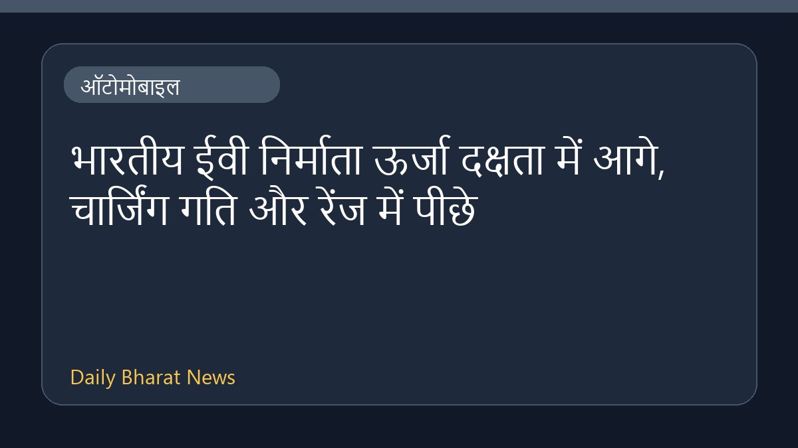

भारतीय ईवी निर्माता ऊर्जा दक्षता में आगे, चार्जिंग गति और रेंज में पीछे

हाल ही में आई एक रिपोर्ट के अनुसार, भारतीय इलेक्ट्रिक वाहन (ईवी) निर्माता ऊर्जा दक्षता के मामले में टेस्ला और बीवाईडी जैसी वैश्विक कंपनियों से आगे निकल गए हैं। हालांकि, भारतीय वाहनों में चार्जिंग की गति और कुल ड्राइविंग रेंज अभी भी कमजोर बनी हुई है। ऑटोमोबाइल क्षेत्र से जुड़ी इस रिपोर्ट में भारतीय बाजार की खूबियों और कमियों पर प्रकाश डाला गया है, जिससे यह स्पष्ट होता है कि देश में ईवी तकनीक को अभी और बेहतर बनाने की आवश्यकता है। वाहन निर्माताओं के लिए इन कमियों को दूर करना एक बड़ी चुनौती होगी।
मूल स्रोत: Automobile News Sources
Indian EV makers outperform Tesla and BYD on energy efficiency, but charging speed and range remain weak - The Statesman ↗
Indian EV makers outperform Tesla and BYD on energy efficiency, but charging speed and range remain weak - The Statesman ↗